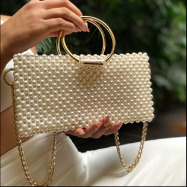
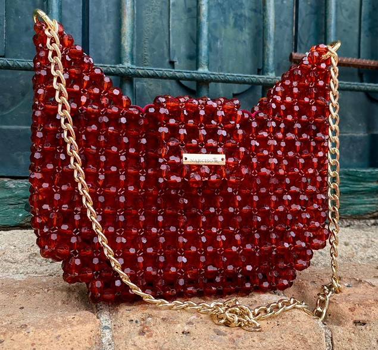
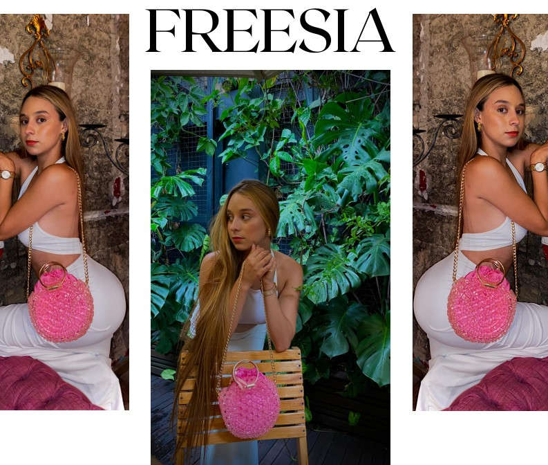
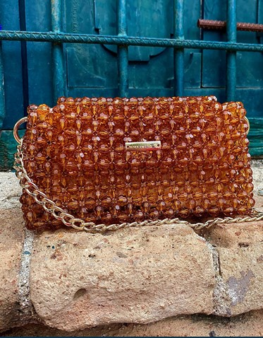

Descubre elegancia, creada con pasión.

DALIA
Dalia es una cartera artesanal inspirada en la elegancia de la flor homónima. Elaborada con perlas beige, argollas doradas y una cadena clásica-moderna, combina delicadeza y fuerza. Su diseño equilibrado simboliza transformación y creatividad, ideal para mujeres que buscan florecer con estilo.
$165.000
Ver producto →

MAGNOLIA
Magnolia es un bolso elegante inspirado en la flor que simboliza nobleza y amor sereno. Hecho con cuentas rojas facetadas y cadena dorada, combina poder y delicadeza. Es una pieza imponente y sutil, ideal para mujeres que ven el lujo en los detalles y el arte en cada gesto.
$155.000
Ver producto →

IRIS
Iris es un bolso inspirado en la flor que simboliza esperanza y conexión espiritual. Elaborado con cuentas lavanda iridiscentes, asa tejida removible y cadena dorada, combina versatilidad y elegancia. Una pieza etérea para mujeres intuitivas que iluminan con sutileza y vibrante presencia.
$155.000
Ver producto →

AMAPOLA
Amapola es un bolso artesanal vibrante, inspirado en la flor que simboliza pasión y fuerza interior. Tejido con cubos rojos y perlas blancas de 10 mm, con cadena dorada, combina estructura y elegancia. Ideal para mujeres decididas que desean llevar arte, impacto y feminidad en cada look.
$185.000
Ver producto →

FREESIA
Freesia es un bolso delicado y juvenil, elaborado con cubos acrílicos rosados y detalles dorados. Incluye una bolsa satinada interna que aporta romanticismo y funcionalidad. Ligero, elegante y sutilmente brillante, es ideal para mujeres que expresan ternura y encanto en los pequeños detalles.
$165.000
Ver producto →

ANEMONA
Anémona es un bolso inspirado en la sensibilidad y la protección espiritual. Hecho con cuentas ámbar facetadas y cadena dorada, combina delicadeza y elegancia discreta. Evoca un romanticismo sereno, ideal para quienes encuentran fortaleza en la ternura y belleza en lo sutil.
$155.000
Ver producto →